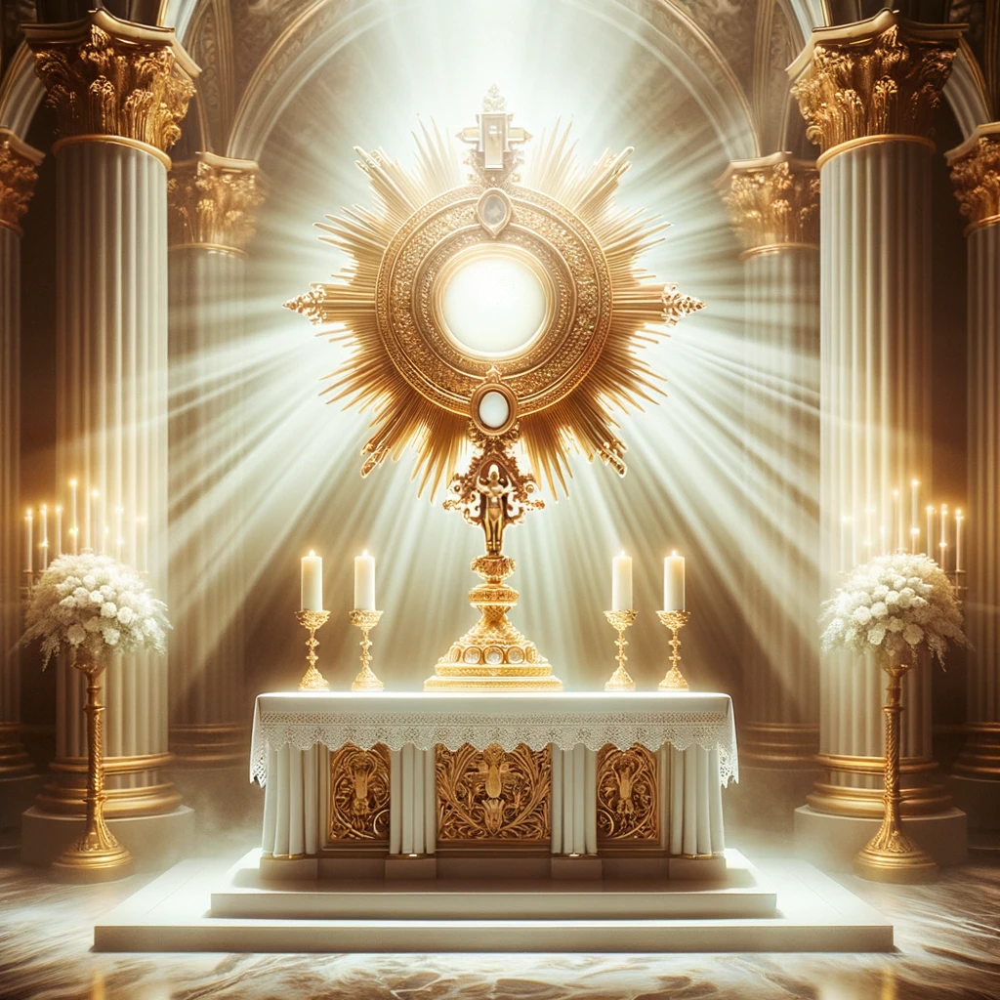
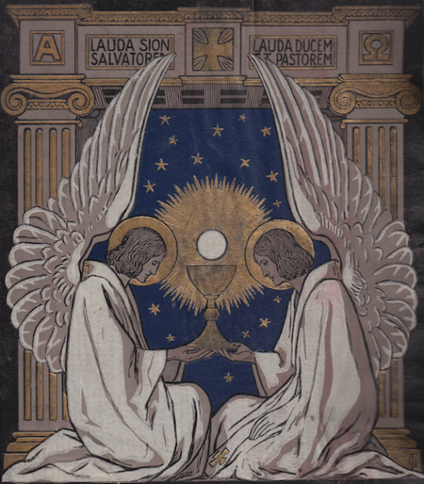

Anbetung


Liebe junge Leute, das Glück, das ihr sucht, das Glück, das ihr zu genießen das Recht habt, hat einen Namen und ein Gesicht: es ist Jesus von Nazareth, verborgen in der Eucharistie“ – Papst Benedikt XVI
Kommt, lasst uns jubeln dem HERRN, jauchzen dem Fels unsres Heils! Lasst uns mit Dank seinem Angesicht nahen, ihm jauchzen mit Liedern! […] Lasst uns niederknien vor dem HERRN, unserem Schöpfer! - Psalm 95,1-6
Schon im Alten Testament haben die Gläubigen gewusst, wie wichtig es ist, vor dem Herrn zu kommen und ihn anzubeten. Doch was bedeutet eigentlich Anbetung?
Im ersten Moment heißt es für mich, vor Gott zu kommen und Ihm die Ehre zu geben. Das heißt, jeder kann auch erst einmal ganz alleine oder mit Freunden, zuhause oder in der Natur vor Gott kommen, um ihn zu loben und zu preisen.
Doch in unserer Kirche gibt es eine ganz besondere Form der Anbetung. Wir glauben daran, dass Jesus im gewandelten Leib Christi gegenwärtig ist. Um Gott besonders zu verehren, kommen viele von uns vor dem ausgesetzten Allerheiligsten betend zusammen.
Die Betrachtung der gewandelten Hostie ist eine ganz persönliche Begegnung zwischen Gott und Dir. Jesus ist in seinem Leib direkt da. Vor Gott zu kommen, Ihn zu betrachten, zu preisen und Dank zu sagen, den Tag zu reflektieren und für die Schwierigkeiten in meinem Leben zu beten, gibt unglaublich viel Kraft. Oft verliert man sich im Alltag. Die Anbetung hilft mir, meinen Blick wieder auf Gott zu richten, meine Sorgen und Ängste an Jesus abzugeben und seine Freude und seinen Frieden wieder in mein tägliches Leben zu holen.
Papst Johannes Paul II. bezeichnete das Allerheiligste Sakrament als das lebendige Herz in jeder unserer Kirchen. "Besucht den Herrn von Herz zu Herz in der eucharistischen Anbetung. Tag für Tag werdet ihr neuen Auftrieb erhalten, der es euch ermöglichen wird, die Leidenden zu trösten und der Welt den Frieden zu bringen." (aus der Botschaft von Papst Johannes Paul II. zum XVII. Weltjugendtag in Toronto 2002)
Die Tradition der Heiligen Stunde wurde im Wesentlichen von Jesus selbst inspiriert, als er in Gethsemane sagte: “Konntet ihr nicht einmal eine Stunde mit mir wachen?” (Mat 26:40). Im 17. Jahrhundert wurde die Praxis von der heiligen Margareta Maria Alacoque, einer Nonne und Mystikerin, popularisiert, die Visionen vom Heiligsten Herzen Jesu hatte. In einer ihrer Visionen forderte Jesus, dass die Gläubigen eine Stunde in Anbetung vor ihm verbringen, um sein Leiden zu ehren und für die Sünden der Menschheit Sühne zu leisten.
Bibel
"Und er nahm Brot, sprach das Dankgebet, brach es und reichte es ihnen mit den Worten: Das ist mein Leib, der für euch hingegeben wird. Tut dies zu meinem Gedächtnis! Ebenso nahm er nach dem Mahl den Kelch und sagte: Dieser Kelch ist der Neue Bund in meinem Blut, das für euch vergossen wird." Lukas 22,19-20
"Jesus antwortete ihnen: Ich bin das Brot des Lebens; wer zu mir kommt, wird nie mehr hungern, und wer an mich glaubt, wird nie mehr Durst haben." - Johannes 6:35
"So aber ist es mit dem Brot, das vom Himmel herabkommt: Wenn jemand davon isst, wird er nicht sterben. 51 Ich bin das lebendige Brot, das vom Himmel herabgekommen ist. Wer von diesem Brot isst, wird in Ewigkeit leben. Das Brot, das ich geben werde, ist mein Fleisch für das Leben der Welt. 52 Da stritten sich die Juden und sagten: Wie kann er uns sein Fleisch zu essen geben? 53 Jesus sagte zu ihnen: Amen, amen, ich sage euch: Wenn ihr das Fleisch des Menschensohnes nicht esst und sein Blut nicht trinkt, habt ihr das Leben nicht in euch. 54 Wer mein Fleisch isst und mein Blut trinkt, hat das ewige Leben und ich werde ihn auferwecken am Jüngsten Tag. 55 Denn mein Fleisch ist wahrhaft eine Speise und mein Blut ist wahrhaft ein Trank. 56 Wer mein Fleisch isst und mein Blut trinkt, der bleibt in mir und ich bleibe in ihm. 57 Wie mich der lebendige Vater gesandt hat und wie ich durch den Vater lebe, so wird jeder, der mich isst, durch mich leben. 58 Dies ist das Brot, das vom Himmel herabgekommen ist. Es ist nicht wie das Brot, das die Väter gegessen haben, sie sind gestorben. Wer aber dieses Brot isst, wird leben in Ewigkeit." - Johannes 6,50-58
"Bleibt in mir und ich bleibe in euch. Wie die Rebe aus sich keine Frucht bringen kann, sondern nur, wenn sie am Weinstock bleibt, so auch ihr, wenn ihr nicht in mir bleibt." - Johannes 15:4
"Gott ist Geist und alle, die ihn anbeten, müssen im Geist und in der Wahrheit anbeten." - Johannes 4,24
"So sollt ihr mit allen Heiligen dazu fähig sein, die Länge und Breite, die Höhe und Tiefe zu ermessen und die Liebe Christi zu erkennen, die alle Erkenntnis übersteigt. So werdet ihr erfüllt werden in die ganze Fülle Gottes hinein." - Epheser 3,18-19
"Mit dem Himmelreich ist es wie mit einem Schatz, der in einem Acker vergraben war. Ein Mann entdeckte ihn und grub ihn wieder ein. Und in seiner Freude ging er hin, verkaufte alles, was er besaß, und kaufte den Acker." - Matthäus 13,44
"Oder wisst ihr nicht, dass euer Leib ein Tempel des Heiligen Geistes ist, der in euch wohnt und den ihr von Gott habt? Ihr gehört nicht euch selbst; denn um einen teuren Preis seid ihr erkauft worden. Verherrlicht also Gott in eurem Leib!" - 1. Korinther 6,19-20
"Nicht mehr ich lebe, sondern Christus lebt in mir. Was ich nun im Fleische lebe, lebe ich im Glauben an den Sohn Gottes, der mich geliebt und sich für mich hingegeben hat." - Galater 2,2,0
"Lasst uns also voll Zuversicht hinzutreten zum Thron der Gnade, damit wir Erbarmen und Gnade finden und so Hilfe erlangen zur rechten Zeit!" - Hebräer 4,16
"Würdig ist das Lamm, das geschlachtet ist, / Macht zu empfangen, Reichtum und Weisheit, / Kraft und Ehre, Lob und Herrlichkeit. Und alle Geschöpfe im Himmel und auf der Erde, unter der Erde und auf dem Meer, alles, was darin ist, hörte ich sprechen: Ihm, der auf dem Thron sitzt, und dem Lamm / gebühren Lob und Ehre und Herrlichkeit und Kraft in alle Ewigkeit." - Offenbarung 5,12-13
"Siehe: Die Jungfrau wird empfangen / und einen Sohn gebären / und sie werden ihm den Namen Immanuel geben, / das heißt übersetzt: Gott mit uns." - Matthäus 1,23
Zitate
"Die Eucharistie ist die Quelle und der Höhepunkt des ganzen christlichen Lebens." - Zweites Vatikanisches Konzil, Lumen Gentium, 1964
"Wie viele von euch sagen: Ich möchte sein Gesicht sehen, seine Kleider, seine Schuhe. Ihr seht Ihn, ihr berührt Ihn, ihr esst Ihn. Er gibt sich euch hin, nicht nur damit ihr Ihn sehen könnt, sondern auch, um eure Speise und Nahrung zu sein." - St. Johannes Chrysostomus
„Die Eucharistie ist ein Feuer, das uns entzündet.“ - Hl. Johannes von Damaskus
"In dieser kleinen Hostie liegt die Lösung für alle Probleme der Welt." - St. Johannes Paul II.
„Wenn du dich dem Tabernakel näherst, denke daran, dass Er seit zwanzig Jahrhunderten auf dich wartet.“ - Hl. Josemaria Escriva
“Jesus hat sich selbst zum Brot des Lebens gemacht, um uns Leben zu geben. Nacht und Tag ist er da. Wenn du wirklich in der Liebe wachsen willst, kehre zurück zur Eucharistie, kehre zurück zur Anbetung.” - Mutter Teresa
"Es gibt nichts, was der Eucharistie an Größe gleichkäme! Stellt alle guten Werke der Welt einer guten Kommunion gegenüber, das ist wie ein Staubkörnchen neben einem Gebirge." - Hl. Pfarrer von Ars
"Man spürt es, wenn eine Seele das Sakrament der Eucharistie würdig empfangen hat. Sie ist so in Liebe versunken, von ihr durchdrungen und verändert, dass man sie in ihrem Handeln und in ihren Worten nicht wiedererkennt. Sie ist demütig, liebenswürdig und bescheiden; sie ist in friedlichem Einklang mit der ganzen Welt. Sie ist eine zu den größten Opfern fähige Seele." - Hl. Pfarrer von Ars
"Wer die heilige Eucharistie empfängt, verliert sich in Gott wie ein Wassertropfen im Ozean. Man kann sie nicht mehr voneinander trennen. Wenn nach der Kommunion uns jemand mit der Frage überraschte: "Was tragt ihr mit euch nach Hause?" so könnten wir antworten: "Wir tragen den Himmel mit uns fort." Das trifft genau zu. Doch unser Glaube ist nicht groß genug. Wir begreifen unsere Würde nicht. Wenn wir vom heiligen Tisch weggehen, sind wir so glücklich, wie es die drei Weisen aus dem Morgenland gewesen wären, wenn sie das Jesuskind mit sich fortgetragen hätten können." - Hl. Pfarrer von Ars
"Eine wesentliche Weise des Mitseins mit dem Herrn ist die eucharistische Anbetung. […] Der Herr erzählt uns in einem seiner Gleichnisse von dem im Acker verborgenen Schatz; wer ihn gefunden hat, sagt er uns, verkauft alles, um den Acker erwerben zu können, weil der versteckte Schatz alle anderen Werte übertrifft. Der verborgene Schatz, das Gut über alle Güter, ist das Reich Gottes – ist er selbst, das Reich in Person. In der heiligen Hostie ist er da, der wahre Schatz, für uns immer zugänglich. Im Anbeten dieser seiner Gegenwart lernen wir erst recht, ihn zu empfangen; lernen wir das Kommunizieren, lernen wir die Feier der Eucharistie von innen her." - Benedikt XVI., 11. September 2006, Altötting
“In keiner anderen Handlung erscheint der Erlöser zärtlicher und liebevoller als in dieser, in der Er sich selbst entäußert und sich zur Speise macht, um tief in unser Inneres einzudringen und sich mit Herz und Leib Seiner Gläubigen zu vereinen.” - Der hl. Franz von Sales
"Die Eucharistie ist der höchste Beweis der Liebe Jesu. Danach gibt es nichts mehr, außer dem Himmel selbst" - St. Peter Julian Eymard
„Eine der bewundernswertesten Wirkungen des Heiligen Abendmahls besteht darin, die Seele vor der Sünde zu bewahren und denen zu helfen, die durch Schwäche gefallen sind, wieder aufzustehen. Es ist daher viel gewinnbringender, sich diesem göttlichen Sakrament mit Liebe, Respekt und Zuversicht zu nähern, als durch übermäßige Angst und Skrupellosigkeit fern zu bleiben.“ - Hl. Ignatius von Loyola
„Geh oft zur heiligen Kommunion. Gehe sehr oft hin! Dies ist dein einziges Heilmittel.“ - Hl. Therese von Lisieux
"Bittet Jesus, euch zu einem Heiligen zu machen. Schließlich kann das nur Er tun. Geht regelmäßig zur Beichte und so oft wie möglich zur Kommunion" - St. Dominikus Savio
„Jesus im Allerheiligsten Sakrament ist das lebendige Herz jeder unserer Gemeinden.“ - Hl. Paul VI
„Wenn es das „tägliche Brot“ ist, warum nimmst du es dann einmal im Jahr? ... Nimm täglich, was dir täglich nützt. Lebe so, dass du es verdienst, es täglich zu erhalten. Wer es nicht verdient, es täglich zu erhalten, verdient es nicht, es einmal im Jahr zu erhalten.“ - Hl. Ambrosius von Mailand
„Alle guten Werke der Welt sind dem Heiligen Messopfer nicht gleichgestellt, weil sie Menschenwerke sind; aber die Messe ist das Werk Gottes. Das Martyrium ist nichts dagegen, denn es ist nur das Opfer des Menschen für Gott; aber die Messe ist das Opfer Gottes für den Menschen.“ - Hl. Pfarrer von Ars
„Ich hungere nach dem Brot Gottes, dem Fleisch Jesu Christi … Ich sehne mich danach, von seinem Blut zu trinken, dem Geschenk unendlicher Liebe.“ - Hl. Ignatius von Antiochien
„Wenn Christus die Juden nicht ohne Nahrung in die Wüste entlassen wollte, aus Angst, sie würden unterwegs zusammenbrechen, sollte es uns lehren, dass es gefährlich ist, zu versuchen, ohne das Brot des Himmels in den Himmel zu kommen.“ - Hl. Hieronymus
„Dieses übernatürliche Brot und dieser geweihte Kelch sind für die Gesundheit und Erlösung der Menschheit.“ - Hl. Cyprian von Karthago
„Wenn wir hart arbeiten, müssen wir gut essen. Was für eine Freude, dass wir oft die heilige Kommunion empfangen können! Es ist unser Leben und unsere Unterstützung in diesem Leben – Empfange oft die Kommunion, und Jesus wird dich in sich selbst verwandeln.“ - Hl. Pierre Julien Eymard
„Lebe von der göttlichen Eucharistie, wie es die Hebräer vom Manna taten. Deine Seele kann sich inmitten der Arbeit und der Kontakte mit der Welt ganz der göttlichen Eucharistie widmen und sehr heilig sein.“ - Hl. Pierre Julien Eymard
„Wenn die Messe gefeiert wird, ist das Heiligtum mit unzähligen Engeln gefüllt, die das auf dem Altar geopferte göttliche Opfer anbeten.“ - Hl. Johannes Chrysostomus
"Heute verweilte ich lange in unserer kleinen katholischen Dorfkirche vor dem Tabernakel im Gebet. Dies ist ein bewohnter Ort." - Roger Schutz, Prior von Taizé
"Welch wunderbare Majestät! Welch erstaunliche Herablassung! O erhabene Demut! Dass der Herr des ganzen Universums, Gott und der Sohn Gottes, Sich so unter die Gestalt eines kleinen Brotes demütigen sollte, zu unserem Heil." - Hl. Franz von Assisi
"Er ist das Brot, gesät in der Jungfrau, gesäuert im Fleisch, geformt in seiner Passion, gebacken im Ofen des Grabes, platziert in den Kirchen und auf den Altären ausgelegt, das täglich himmlische Speise den Gläubigen liefert."
"Er ist das Brot, gesät in der Jungfrau, gesäuert im Fleisch, geformt in seiner Passion, gebacken im Ofen des Grabes, platziert in den Kirchen und auf den Altären ausgelegt, das täglich himmlische Speise den Gläubigen liefert." - St. Petrus Chrysologus
"Bis wir eine leidenschaftliche Liebe zu unserem Herrn im Allerheiligsten Sakrament haben, werden wir nichts erreichen." - St. Peter Julian Eymard
"Weder theologisches Wissen noch soziales Handeln allein reichen aus, um uns in der Liebe zu Christus zu halten, es sei denn, beides wird von einer persönlichen Begegnung mit Ihm vorangebracht. Theologische Einsichten werden nicht nur zwischen zwei Buchdeckeln gewonnen, sondern auf zwei gebeugten Knien vor einem Altar. Die Heilige Stunde wird wie eine Sauerstoffflasche, um den Atem des Heiligen Geistes inmitten der fauligen und verpesteten Atmosphäre der Welt wiederzubeleben" - Erzbischof Fulton J. Sheen
"Das Sakrament des Leibes des Herrn vertreibt die Dämonen, verteidigt uns gegen die Anreize zur Lasterhaftigkeit und zur Begierde, reinigt die Seele von Sünde, beruhigt den Zorn Gottes, erleuchtet das Verständnis, um Gott zu erkennen, entflammt den Willen und die Affekte mit der Liebe zu Gott, füllt das Gedächtnis mit geistiger Süße, bestätigt den ganzen Menschen im Guten, befreit uns vom ewigen Tod, vervielfacht die Verdienste eines guten Lebens, führt uns zu unserer ewigen Heimat und belebt den Körper zu ewigem Leben" - St. Thomas von Aquin
"...St. Johannes Chrysostomus, der, wie ihr wisst, das eucharistische Mysterium mit solcher Sprachnoblesse und aus der Andacht geborener Einsicht behandelt hat und seinen Gläubigen bei einer Gelegenheit über dieses Mysterium die folgenden, äußerst passenden Worte sagte: 'Lassen wir uns in allen Dingen Gott unterwerfen und Ihm nicht widersprechen, auch wenn das, was Er sagt, unserem Verstand und unserer Vernunft zuwiderzulaufen scheint; vielmehr sollen Seine Worte über unseren Verstand und unsere Vernunft herrschen. Lasst uns in Bezug auf die (eucharistischen) Mysterien so handeln, dass wir nicht nur auf das schauen, was unseren Sinnen fällt, sondern uns an Seine Worte halten. Denn Sein Wort kann uns nicht in die Irre führen.' Die scholastischen Lehrer machten oft ähnliche Aussagen: Dass in diesem Sakrament der wahre Leib Christi und Sein wahres Blut sind, ist etwas, das 'von den Sinnen nicht erfasst werden kann', sagt St. Thomas, 'sondern nur durch den Glauben, der sich auf göttliche Autorität stützt. Deshalb sagt St. Cyrillus in einem Kommentar zu Lukas 22,19: ('Dies ist Mein Leib, der für euch gegeben wird'), 'Zweifelt nicht daran, ob dies wahr ist, sondern nehmt vielmehr die Worte des Heilands im Glauben an, denn da Er die Wahrheit ist, kann Er nicht lügen.' So hallen die christlichen Menschen, indem sie die Worte desselben St. Thomas nachsprechen, oft die Worte nach: 'Sicht, Berührung und Geschmack in Dir täuschen sich, das Ohr allein wird am sichersten geglaubt. Ich glaube alles, was der Sohn Gottes gesprochen hat - es gibt kein wahreres Zeichen als das Wort der Wahrheit.' Tatsächlich behauptet St. Bonaventura: 'Es gibt keine Schwierigkeit hinsichtlich der Gegenwart Christi in der Eucharistie als Zeichen, aber dass Er wirklich in der Eucharistie gegenwärtig ist, wie Er im Himmel ist, das ist äußerst schwierig. Daher ist es besonders verdienstvoll, dies zu glauben.' Zudem deutet das Heilige Evangelium darauf hin, als es von den vielen Jüngern Christi erzählt, die, nachdem sie die Predigt über das Essen Seines Fleisches und das Trinken Seines Blutes gehört hatten, sich abwandten und unseren Herrn verließen und sagten: 'Das ist eine seltsame Rede, wer kann sie hören?' Petrus hingegen antwortete auf Jesu Frage, ob auch die Zwölf gehen wollten, schnell und entschlossen mit dem wunderbaren Bekenntnis seines Glaubens und des der anderen: 'Herr, zu wem sollen wir gehen? Deine Worte sind Worte des ewigen Lebens.'" - Papst Paul VI., Mysterium Fidei (Geheimnis des Glaubens)
"Das Brot des Himmels und der Kelch des Heils
In der Nacht, in der er verraten wurde, nahm unser Herr Jesus Christus das Brot, und nachdem er gedankt hatte, brach er es und gab es seinen Jüngern und sagte: 'Nehmt und esst: Dies ist mein Leib.' Er nahm den Kelch, dankte und sagte: 'Nehmt und trinkt: Dies ist mein Blut.' Da Christus selbst das Brot als seinen Leib bezeichnet hat, wer kann noch Zweifel haben? Da er selbst ganz klar gesagt hat, Dies ist mein Blut, wer würde es wagen, es in Frage zu stellen und zu sagen, dass es nicht sein Blut ist?
Deshalb empfangen wir mit voller Zuversicht das Brot und den Wein als den Leib und das Blut Christi. Sein Leib wird uns unter dem Symbol des Brotes gegeben, und sein Blut wird uns unter dem Symbol des Weines gegeben, um uns durch deren Empfang zu einem Leib und Blut in unseren Gliedern zu machen, wir werden Träger Christi und Teilhaber an der göttlichen Natur, wie der heilige Petrus sagt.
Einmal, als er zu den Juden sprach, sagte Christus: Wenn ihr nicht mein Fleisch esst und mein Blut trinkt, werdet ihr kein Leben in euch haben. Dies entsetzte sie und sie verließen ihn. Seine Worte nicht auf spirituelle Weise verstehend, dachten sie, der Heiland wolle sie zum Kannibalismus veranlassen.
Unter dem alten Bund gab es das Schaubrot, aber es endete mit der alten Ordnung, zu der es gehörte. Unter dem neuen Bund gibt es Brot vom Himmel und den Kelch des Heils. Diese heiligen sowohl die Seele als auch den Körper. Das Brot ist angepasst an die Heiligung des Körpers, das Wort, an die Heiligung der Seele.
Betrachtet also die eucharistischen Elemente nicht als gewöhnliches Brot und Wein: Sie sind in der Tat der Leib und das Blut des Herrn, wie er selbst erklärt hat. Was auch immer eure Sinne euch sagen mögen, seid stark im Glauben.
Ihr seid gelehrt worden und seid fest davon überzeugt, dass das, was aussieht und schmeckt wie Brot und Wein, nicht Brot und Wein ist, sondern der Leib und das Blut Christi. Ihr wisst auch, wie David dies vor langer Zeit ankündigte, als er sang: Brot stärkt des Menschen Herz und lässt sein Gesicht leuchten mit dem Öl der Freude. Stärkt euer Herz also, indem ihr dieses Brot als geistiges Brot empfangt, und bringt Freude auf das Gesicht eurer Seele.
Möge die Reinheit des Gewissens den Schleier vom Gesicht eurer Seele entfernen, damit ihr, indem ihr die Herrlichkeit des Herrn wie in einem Spiegel betrachtet, von Herrlichkeit zu Herrlichkeit verwandelt werdet in Christus Jesus, unserem Herrn. Ihm sei Ehre in Ewigkeit. Amen."
Jerusalemer Katechese (Kat. 22, Mystagogica 4, 1. 3-6. 9: PG 33, 1098-1106)
Katechismus
1381. Thomas von Aquin sagt: „Daß der wahre Leib und das wahre Blut Christi in diesem Sakrament seien, läßt sich nicht mit den Sinnen erfassen sondern nur durch den Glauben, der sich auf die göttliche Autorität stützt. Deshalb sagt Cyrill zur Schriftstelle ,Das ist mein Leib, der für euch hingegeben wird‘ (Lk 22,19): ,Zweifle nicht, ob das wahr sei. Nimm vielmehr die Worte des Erlösers im Glauben auf. Da er die Wahrheit ist, lügt er nicht" (s. th. 3,75, 1; zitiert von Paul VI., MF 18).
>> Gottheit, tief verborgen, betend nah ich dir.
>> Unter diesen Zeichen bist du wahrhaft hier.
>> Sieh, mit ganzem Herzen schenk ich dir mich hin,
>> weil vor solchem Wunder ich nur Armut bin.
>> Augen, Mund und Hände täuschen sich in dir,
>> doch des Wortes Botschaft offenbart dich mir.
>> Was Gott Sohn gesprochen, nehm ich glaubend an;
>> er ist selbst die Wahrheit, die nicht trügen kann.
>> (Thomas v. A., Hymnus „Adoro te devote")
„Die Kirche und die Welt haben die Verehrung der Eucharistie sehr nötig. In diesem Sakrament der Liebe wartet Jesus selbst auf uns. Keine Zeit sei uns dafür zu schade, um ihm dort zu begegnen: in der Anbetung, in einer Kontemplation voller Glauben, bereit, die große Schuld und alles Unrecht der Welt zu sühnen. Unsere Anbetung sollte nie aufhören" (Johannes Paul II., Brief „Dominicæ cenæ" 3).
2096. Der erste Akt der Tugend der Gottesverehrung ist die Anbetung. Gott anbeten heißt, ihn als Gott, als den Schöpfer und Retter, den Herrn und Meister von allem, was ist, als unendliche und barmherzige Liebe anzuerkennen. Jesus beruft sich auf das Buch Deuteronomium und sagt: „Vor dem Herrn, deinem Gott, sollst du dich niederwerfen und ihm allein dienen" (Lk 4,8).
2097. Gott anbeten heißt, in Ehrfurcht und absoluter Unterwerfung die „Nichtigkeit des Geschöpfs" anzuerkennen, welches einzig Gott sein Dasein verdankt. Gott anbeten heißt, wie Maria im Magnificat ihn zu loben, ihn zu preisen und sich selbst zu demütigen, indem man dankbar anerkennt, daß er Großes getan hat und daß sein Name heilig ist [Vgl. Lk 1,46-49].
Die Anbetung des einzigen Gottes befreit den Menschen von der Selbstbezogenheit, von der Sklaverei der Sünde und der Vergötzung der Welt.
2098. Die Akte des Glaubens, der Hoffnung und der Liebe, die das erste Gebot befiehlt, vollenden sich im Gebet. Wir beten Gott an, indem wir den Geist in Lob‑ und Dankgebet, Fürbitte und Bitte zu Gott erheben. Das Gebet ist eine unerläßliche Voraussetzung, um die Gebote Gottes halten zu können. Man soll „allzeit beten und darin nicht nachlassen" (Lk 18,1).
2782. Wir können den Vater anbeten, weil er uns durch die Annahme an Kindes Statt in seinem eingeborenen Sohn die Wiedergeburt zu seinem Leben geschenkt hat. Durch die Taufe gliedert er uns dem Leib seines Christus, des Gesalbten, ein, und durch die Salbung mit seinem Geist, die sich vom Haupt über die Glieder ergießt, macht er auch uns zu „Gesalbten".
2628. Anbetung ist die erste Haltung des Menschen, der sich vor seinem Schöpfer als Geschöpf erkennt. Sie verherrlicht die Größe des Herrn, der uns geschaffen hat [Vgl. Ps 95,1-6], und die Allmacht des Retters, der uns vom Bösen befreit. In der Anbetung wirft sich der Geist vor dem „König der Herrlichkeit" (Ps 24,9-10) nieder und schweigt ehrfürchtig vor dem „je größeren Gott" (Augustinus, Psal. 62,16). Die Anbetung des dreimal heiligen und über alles zu liebenden Gottes erfüllt uns mit Demut und gibt unserem Bitten Zuversicht.